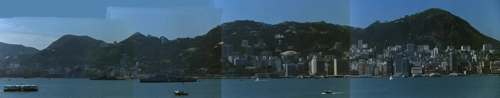
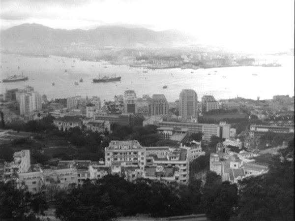
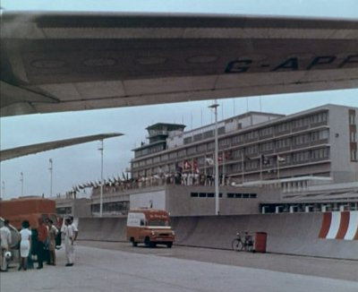
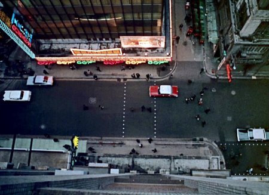
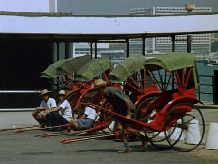
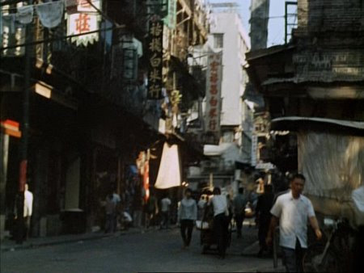

HONG
KONG
Hong Kong Island
THE CHAMPIONS: The Interrogation (Cyril Frankel: Autumn 1967)
Craig is forced to relive events from his mission to Hong Kong.
Hong Kong Harbour

DANGER MAN: A Very Dangerous Game (Don Chaffey: 1964)
Establishing shot of Singapore (Central, and Kowloon across the harbour, seen from the Mid-Levels).
Hong Kong Kai Tak Airport, Kowloon (redeveloped)

THE
SAINT:
The Persistent Patriots
(Roy Baker: October 1966)
Simon Templer is waiting in an African airport for his plane to London.

DANGER MAN: A Very Dangerous Game (Don
Chaffey: 1964)
John Drake's hotel in Singapore.

DEPARTMENT S: A Fish Out of Water (Cyril Frankel: April 1969)
To avoid being captured by Takla’s men Jason climbs onto the window ledge of Michele Duplay’s flat in the Century Building. He looks down at the cinema in the street below,
(Identified by Geoff Dodd, March 2022)
THE ADVENTURER: Deadlock (???)
(Identified by Geoff Dodd, March 2022)
Television:
Sometimes - Erasure video (1986)
Star Ferry to Kowloon Pier

THE CHAMPIONS: The Interrogation (Cyril Frankel: Autumn 1967)
Craig is forced to relive events from his mission to Hong Kong, he picks up a rickshaw from the ferry pier.
Upper Station Street

THE CHAMPIONS: The Interrogation (Cyril Frankel: Autumn 1967)
Craig is forced to relive events from his mission to Hong Kong, he is carried by rickshaw through the streets of Hong Kong.
Return to Index